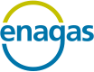

Ranglister Forsyning & strøm Enagás

Enagás
Et blik på de samme fund, ikke en ny score. Sådan virker det
Kort fortalt
Bjarvik ser et spansk gasnetselskab med en reguleret forretning, men faldende indtjening og et afkast under kapitalomkostningerne. Aktien er steget 26 % på et år og er dyr i forhold til egen historik, mens overskuddet ventes at falde. Udbyttet er større end det forventede overskud, og gælden stiger efter et opkøb. Til gengæld foreslås en højere forrentning fra 2027, men reglerne er ikke vedtaget endnu.
En god forretning med et reelt spørgsmålstegn: prisen, en revne eller begge dele.
Største fradrag
- Multipler mod egen historik−5
- FCF-afkast−4
- ROIC−3
Styrker
- Reguleret monopol og højere forrentning+2
- Billig og fast finansiering+1
Sådan er scoren bygget op
Fra 100 til 59, trin for trin: point trækkes fra for forretningen, prisen og revnerne, lægges til for dokumenterede styrker, og så følger tre datajusteringer.
Hold musen over et trin eller vælg det for at se, hvad der drev det. Trin med fund åbner dem nedenfor.
Nøgletal
Pr. 6 nov. 2026. Analytikernes kursmål er ofte optimistiske; læs opsiden som et fingerpeg, ikke en prognose.
- Pris
- 17.80 EUR
- Analytikernes mediankursmål
- 17.43 EUR
- Opside til median
- −2.1%
- Analytikere
- 20
- Kursmålsinterval
- 13.00 – 19.80 EUR
- 52-ugers ændring
- +27%
- P/E (historisk)
- 16.5
- Forward P/E
- 16.6
- PEG
- 5.27
Fund
Hvert fradrag og hvert plus med sin kilde. Åbn et trin for at læse dem.
Forretning
Bliver virksomheden stærkere, ikke bare større? · 3 fund−9 af −30
- −3ROICROIC 2,5 % mod en WACC på 4,1 % – under kapitalomkostningen – og ROCE har ligget fladt på 4,2–4,9 % siden 2021; nettomarginen er faldet fra 41,4 % (2021) til 30,5 % TTM.
- −3Vækstens kvalitetNettoresultatet er faldet fra 404 mio. € (2021) til en guidance på 235 mio. € tilbagevendende resultat i 2026; det tilbagevendende resultat faldt 8,6 % og EBITDA 4,7 % i 1. halvår 2026, og den regulerede aktivbase skrumper, fordi der ikke investeres i nye net.
- −3KapitalallokeringUdlandsinvesteringerne endte med et underskud på 299 mio. € i 2024 (nedskrivning og salg af Tallgrass), og udbyttet blev skåret fra 1,74 € til 1,00 € pr. aktie; nye forretninger giver kun 24 mio. € af 952 mio. € i omsætning TTM.
Pris
Dagens multipler målt mod selskabets egen historik og konkurrenterne. · 2 fund−9 af −35
- −5Multipler mod egen historikTrailing P/E 15,1 mod 10,1–13,2 i 2021–2025 (ekskl. underskudsåret 2024), forward P/E 16,5 mod 13,1–15,5 og P/B 1,87 mod 1,26–1,72 – alle over toppen af eget interval; kun EV/EBITDA 11,0 mod 9,8–14,9 er i den lave ende. Aktien er steget 26 % på et år, mens EPS ventes at falde 10 % i 2026.
- −4FCF-afkastFCF 31 mio. € TTM (P/FCF 139, FCF-afkast 0,7 %) mod P/FCF 6–10 i 2021–2024, og analytikerne venter FCF på −177 mio. € i 2026.
Revner
Cash flow, kunder, gæld, insidere, guidance og det, der ligger bag hovedtallene. · 2 fund−4 af −35
- −3Gæld og udlodningUdbyttet på 1,00 € (ca. 260 mio. €) overstiger guidance for tilbagevendende nettoresultat på 235 mio. €; købet af 31,5 % af franske Teréga for 573 mio. € løfter nettogæld/EBITDA fra 4,1x til 4,6x i 2026.
- −1Regulering (ny periode 2027–2032)Hele vendingen i indtjeningen efter 2027 hviler på CNMC's forslag til cirkulærer fra 26/6-2026, som endnu ikke er endeligt vedtaget, mens den nuværende aktivbase falder.
Plus
Kun dokumenterede styrker. · 2 fund+3 af +15
- +2Reguleret monopol og højere forrentningCNMC foreslår at hæve den finansielle forrentning af gastransmission og regasificering fra 5,44 % til 6,46 % for 2027–2032 med inflationsbeskyttelse og bedre dækning af driftsomkostninger; guidance for 2026 (EBITDA 620 mio. €) er fastholdt.
- +1Billig og fast finansieringGennemsnitlig gældsrente ca. 2 % med over 80 % fastforrentet; nettogælden faldt fra 2.475 til 2.305 mio. € i 1. halvår 2026.
Forbehold
Det, scoren ikke fanger, eller hvor dataene er svage.
Også i Forsyning & strøm
De højeste scorer i samme branche.